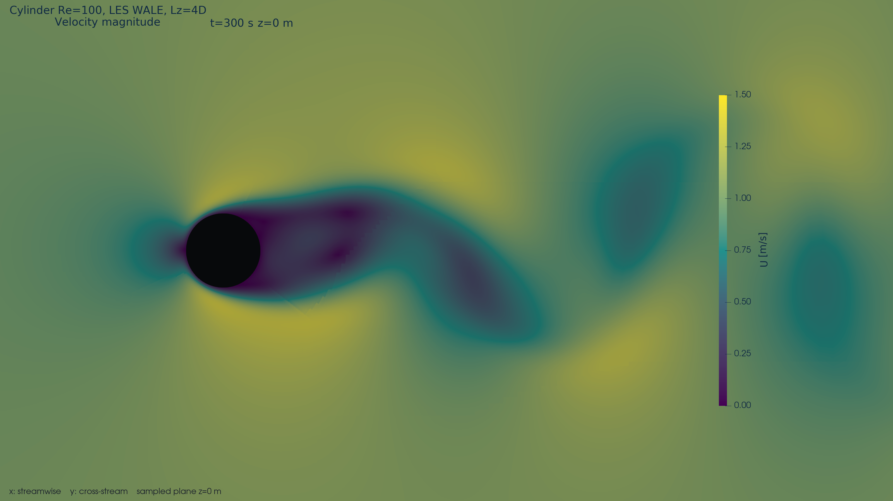
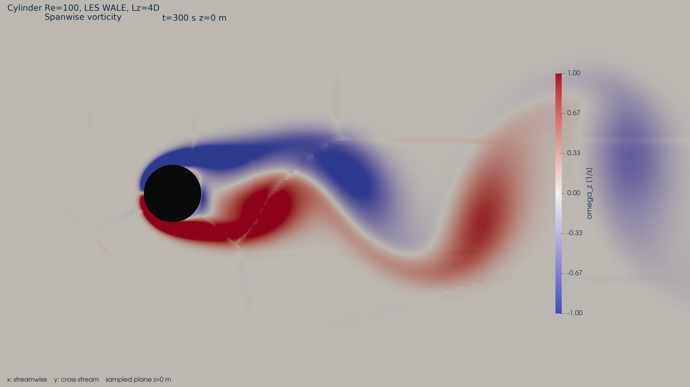
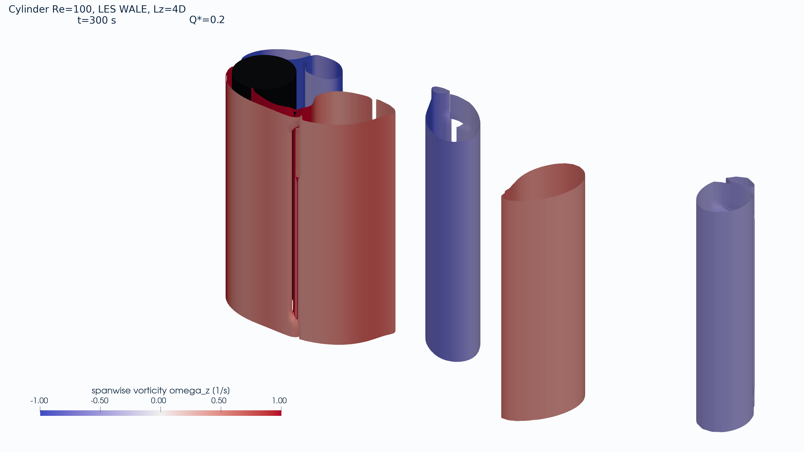
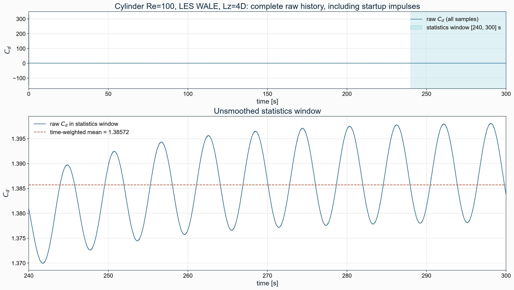

Velocity magnitude
Orthographic z=0 slice; fixed 0 to 1.5 m/s sequential scale.
One complete time step with fixed scales. Read manifest.json and qa_report.md before citing results.

Orthographic z=0 slice; fixed 0 to 1.5 m/s sequential scale.

Zero-centred diverging scale; saturation is disclosed in the manifest.

Q* = 0.2 from the full three-dimensional velocity gradient; domain shell and partition boundaries hidden.

All startup impulses retained; the lower panel shows the explicit 240 to 300 second statistics window.